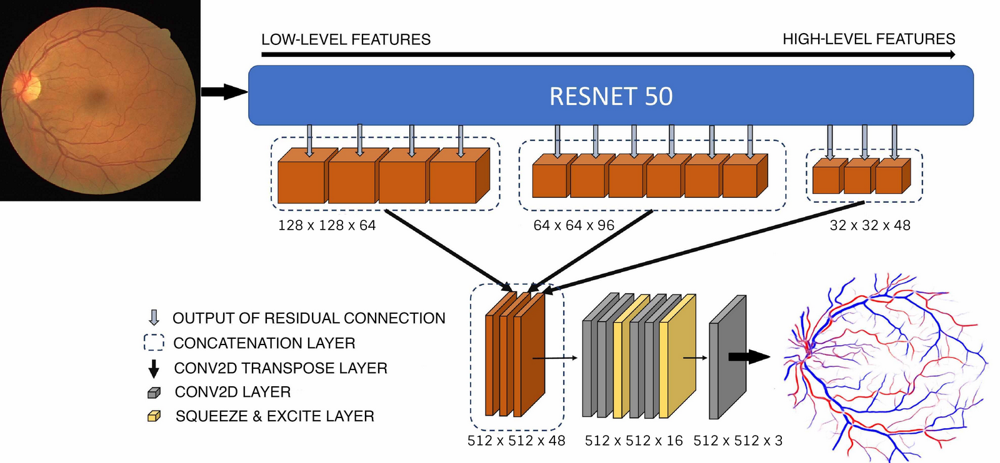
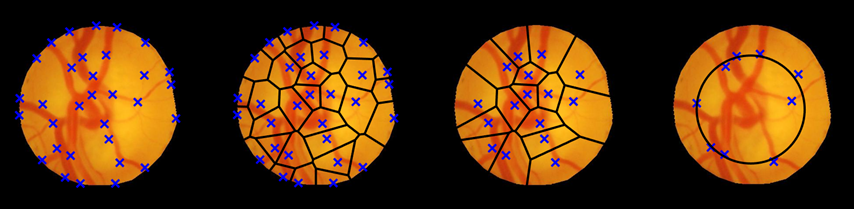
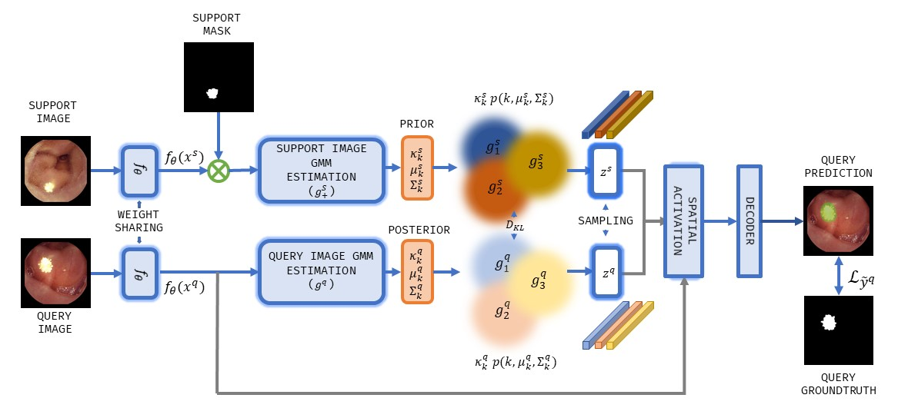

Currently pursuing my master's in Visual Computing at Universitat das Saarlandes, Saarland Infomatic campus, Germany. Previously, I was a Research Assistant at Spectrum Lab, Indian Institue of Science, India where I got an opportunity to work on funded projects.
I finished my undergraduate degree in Electrical and Electronics Engineering with a minor specialization in signal processing and control from Manipal Institute of Technology, India.
I have experience in the area of Medical Image Analysis employing image processing, computer vision, and machine learning techniques.

Automatic Classification of Artery-Vein from a Single Wavelength Fundus Images
P. Kevin Raj
,
Aniketh Manjunath, J.R.H. Kumar and Chandra S. Seelamantula
IEEE International Symposium on Biomedical Imaging (ISBI), Iowa, USA, 2020.
[pdf] [slides]

A Structure Tensor based Voronoi Decomposition Technique for Optic Cup Segmentation
P. Kevin Raj, J.R.H Kumar, S. Jois, S. Harsha and Chandra S. Seelamantula.
IEEE International Conference on Image Processing (ICIP), Taipei, Taiwan, 2019.
[pdf] [oral]

Automatic Segmentation of Common Carotid Artery in Longitudinal Mode Ultrasound Images Using Active Oblongs
J.R.H. Kumar, K. Teotia, P. Kevin Raj, A. Jasbon, K.V. Rajagopal and Chandra S. Seelamantula.
IEEE International Conference on Acoustics, Speech and Signal Processing (ICASSP), Brighton, UK, 2019.
[pdf]

Few-shot Semantic Segmentation of Wireless
Capsule Endoscopy Images
[pdf] [code]